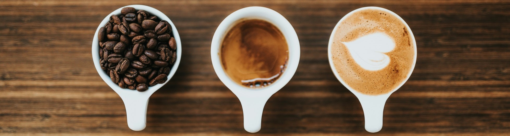
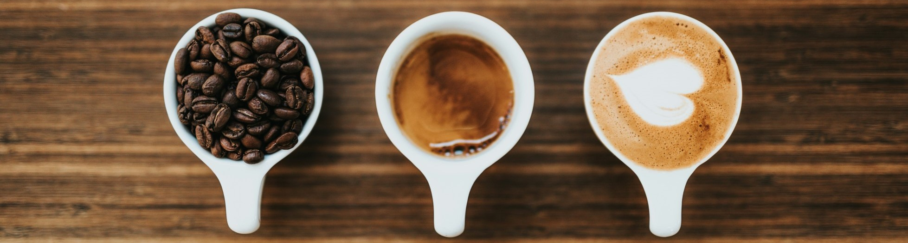

Coffee Drinker Personas
based on The Great American Coffee Test

based on The Great American Coffee Test
 This project was part of the Maven Analytics Coffee Challenge . The challenge objective was to play the role of an Analytics Consultant hired by a group of investors looking to break into the US coffee market. They would like to leverage insights from "The Great American Coffee Taste Test", but lack the analytical skills to do so.
The result is an explanatory report providing a data-driven strategy for opening their first coffee shop. The investors expressed interest in the following areas, but are open to any additional insights and recommendations:
The report below includes an overview of the coffee drinker personas, an analysis on their willingness to spend and of their coffee tastes and ends with recommendations on targeting, product offering and pricing.

Tools Used
I used Python for data cleaning, exploration and manipulation and then Power BI for visualization. During the first step I uncovered the insights in Python and set up the data to be ready to be visualized. I used Power BI strictly for setting up the report visually.Data Cleaning
The original data contains survey responses from ~4,000 Americans after a blind coffee taste test conducted by YouTube coffee expert James Hoffmann and Cometeer.After exploring the data, I decided to eliminate the records that didn't have any answers to the taste test questions. These records didn't actually fulfill the objective of the test - they don't tell us anything about the preferences of the participants between coffees A-D.
Next, I also eliminated the records that registered outliers for Acidity for Coffees A-C, as most likely these included incorrect answers due to errors (ex: a mix-up of the samples).
This left us in the end with ~3,600 unique valid records.
Data Exploration
As James Hoffmann notes, the characteristics of those who participated in the taste test align with the ones of his YouTube subscribers - mostly people interested in coffee and also in his delivery style.
Based on the initial analysis of the answers, the majority of the coffee testers were highly educated (Bachelor's Degree and higher) white/Caucasian men, between 25-44 years old, with no children, and employed full time.
As this demographic is not representative of the overall US population, instead of analyzing the results as a whole, I decided on a different approach - I tried to identify customer personas within the data, by grouping them based on the testers' coffee expertise, motivation, and willingness to spend money on coffee.
I did this using K Means Clustering, a clustering algorithm. Here are the variables included in the algorithm:
Lastly how would you rate your own coffee expertise?Coffee Drinker Personas
I found three groups emerging from the clustering process (the algorithm would have suggested slightly more, but I stuck with 3 for simplicity) and I attached a persona to each:
The Casual Coffee Drinker - represents about 12% of the dataset. This is the group that includes the people who are the least passionate about coffee (among an overall sample of taste testers who tend to be highly interested in coffee), so unsurprisingly it's the smallest group.
They don't consider themselves experts, they don't drink coffee as frequently as the other groups, 33% of them don't even like the taste of coffee.
Also, they don't see as much value in buying a coffee from a coffee shop as the other groups. One of the most interesting characteristics of this group was that it included 53% females, compared to the other 2 groups where males are dominant.
The Educated Coffee Drinker (56% of the dataset). This groups includes taste testers with an above average knowledge of coffee, who enjoy the taste and drink it frequently. They are the middle ground between Casual and Connoisseur.
The Coffee Connoisseur (32% of the dataset) - these are the real passionate coffee drinkers. They consider themselves knowledgeable and enjoy drinking coffee frequently. Predominantly male (81%), they go beyond the taste and are also interested in aspects like the coffee origin. They are willing to pay the most for a cup of coffee and they are the ones who enjoyed coffee D the most.
Following the clustering, I ran a chi square test on the questions that weren't included in the clustering algorithm to see if the potential differences between clusters are statistically significant. I only kept the statistically significant ones to show the differences between the clusters in the report.